.jpg)
Uso do Octave
Uso do OctaveInstalação do OctaveOpção de Uso OnlinePrimeiro TestePacotes pkg (comandos extras)Para listar pacotes já instaladosPacotes Interessantes para nosso caso de usoPara instalar pacotesPacotes mínimos para área de Controle & Sistemas LinearesNovidades no pacote ControlAtualizando pacotes já instaladosMais informações sobre pacotesOps... Carregar pacotes antes...Exemplos de UsoExemplo 1: Gráfico de uma funçãoExemplo 2: Gráfico de uma OndaExemplo 3: Gráfico de uma senóide amortecidaExemplo 4: Multiplicação de matrizes vs elemento-à-elementoExemplo 5: Ingressando funções transferênciaExemplo 6: Expansão em Frações ParciaisExemplo 7: Projeto de um Controlador Proporcionalrlocus() ou rlocusx()Outras funções do Octave
Instalação do Octave
O Octave pode ser obtido à partir de: ver://octave.org/download.html.
No Windows, o arquivo de instalação ocupa 364 MB na versão 7.2.0. Porém, depois de instalado (descompactado), e acrescentado os pacotes que necessitaremos para trabalhar na área de controle, o Octave passa a ocupar aproximadamente 2,17 GBytes.
🥱 Obs.: A instalação do Octave for Windows versão 11.3.0 (~555 MB) pode exigir um período de tempo considerável para sua instalação (49 minutos, 💤, mas já vêm acompanhado de uma série de pacotes, entre eles: control, signal e a=symbolic que são os que vamos necessitar.
No Linux/Ubuntu, a versão snap do Octave 7.2.0 uma vez instalado (sem nenhum pacote extra) ocupa aproximadamente 345 Mbytes. Mas, diferente da versão para Windows, no Linux/Ubuntu, cada pacote (comandos/funções) extras deve se instalado à mão conforme se mostra à seguir e então, o espaço ocupado em disco aumenta. A instalação no Ubuntu é muito mais rápida que no Windows (menos de 5 minutos).
Segue um janela de comandos comum do Octave:
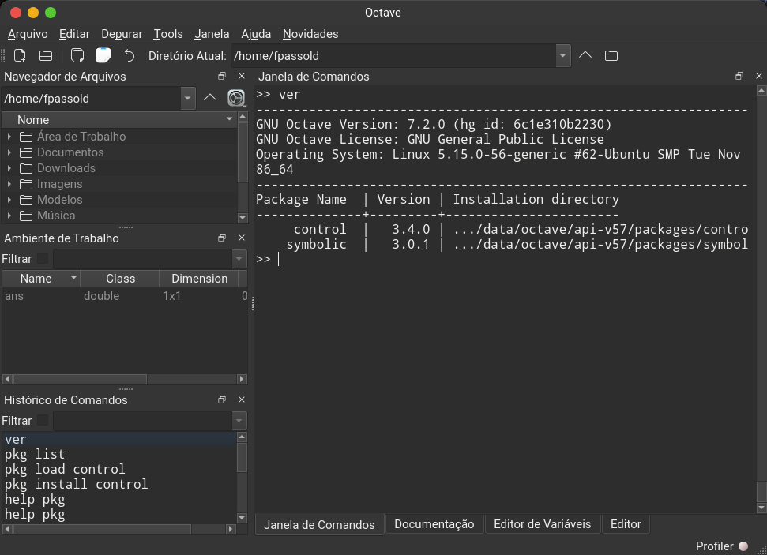
Opção de Uso Online
Existe a opção de usar uma versão online do Octave à partir de: https://octave-online.net
A versão on-line já traz instalados e ativados vários pacotes:
xxxxxxxxxxoctave:1> ver----------------------------------------------------------------------GNU Octave Version: 9.3.0 (hg id: 4e9d169204e7)GNU Octave License: GNU General Public LicenseOperating System: Linux 5.14.0-687.29.1+2.1.el9_8_ciq.x86_64 #1 SMP PREEMPT_DYNAMIC Fri Jul 24 17:38:10 UTC 2026 x86_64----------------------------------------------------------------------Package Name | Version | Installation directory---------------------+---------+----------------------- communications *| 1.2.6 | .../share/octave/packages/communications-1.2.6 control *| 4.1.0 | /usr/local/share/octave/packages/control-4.1.0 data-smoothing | 1.3.0 | .../share/octave/packages/data-smoothing-1.3.0 dataframe *| 1.2.0 | .../local/share/octave/packages/dataframe-1.2.0fuzzy-logic-toolkit *| 0.6.1 | .../octave/packages/fuzzy-logic-toolkit-0.6.1 general *| 2.1.3 | /usr/local/share/octave/packages/general-2.1.3 geometry | 4.1.0 | /usr/local/share/octave/packages/geometry-4.1.0 image *| 2.14.0 | /usr/local/share/octave/packages/image-2.14.0 interval *| 3.2.1 | /usr/local/share/octave/packages/interval-3.2.1 io | 2.6.4 | /usr/local/share/octave/packages/io-2.6.4 linear-algebra *| 2.2.3 | .../share/octave/packages/linear-algebra-2.2.3 ltfat | 2.6.0 | /usr/local/share/octave/packages/ltfat-2.6.0 mapping | 1.4.2 | /usr/local/share/octave/packages/mapping-1.4.2 matgeom | 1.2.4 | /usr/local/share/octave/packages/matgeom-1.2.4 miscellaneous *| 1.3.1 | .../share/octave/packages/miscellaneous-1.3.1 mvn *| 1.1.0 | /usr/local/share/octave/packages/mvn-1.1.0 nan | 3.7.0 | /usr/local/share/octave/packages/nan-3.7.0 netcdf | 1.0.18 | /usr/local/share/octave/packages/netcdf-1.0.18 onsas | 0.2.4 | /usr/local/share/octave/packages/onsas-0.2.4 optim | 1.6.2 | /usr/local/share/octave/packages/optim-1.6.2 piqp | 0.4.1 | /usr/local/share/octave/packages/piqp-0.4.1 signal *| 1.4.6 | /usr/local/share/octave/packages/signal-1.4.6 statistics *| 1.7.0 | .../share/octave/packages/statistics-1.7.0 stk | 2.8.1 | /usr/local/share/octave/packages/stk-2.8.1 struct *| 1.0.18 | /usr/local/share/octave/packages/struct-1.0.18 symbolic *| 3.2.1 | /usr/local/share/octave/packages/symbolic-3.2.1 tablicious | 0.4.4 | .../share/octave/packages/tablicious-0.4.4 tsa | 4.6.3 | /usr/local/share/octave/packages/tsa-4.6.3 video *| 2.1.1 | /usr/local/share/octave/packages/video-2.1.1
Informações extras sobre o Octave: https://wiki.octave.org/Using_Octave
Primeiro Teste
Vamos tentar imprimir um simples gráfico:
xxxxxxxxxx>> t=0:0.01:2; % cria vetor tempo>> pi % constante pians = 3.1416>> y=2*sin(2*pi*1*t); % cria onda senoidal 1 Hz>> % suponha um FPB com fc = 1 Hz, queda de 3 dB em 1 Hz:>> G=10^(-3/20) % calculando "ganho" do FPBG = 0.7079>> y2=G*2*sin(2*pi*1*t-pi/4); % senóide de saída, defasagem de 45 graus (pi/4 em radianos)>> plot(t,y, t,y2) % plotando 2 curvas>> legend('Input', 'Output') % legendaSe não houve erros de digitação, uma janela gráfica como a mostrada abaixo deve ter sido gerada:
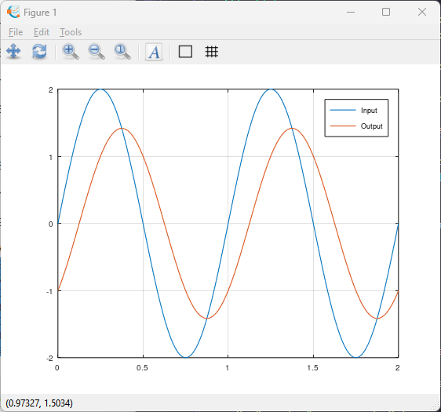
Pacotes pkg (comandos extras)
De forma a ampliar as possibilidades de uso do Octave com a área de Controle Automático, se sugere a instalação de algumas ferramentas extras, chamadas de "pacotes".
Os "pacotes" no caso do Octave, são equivalentes aos "toolboxes" no caso do Matlab.
Para listar pacotes já instalados
Para listar pacotes já instalados, usar o comando pkg list ou ver:
x
octave:15> ver----------------------------------------------------------------------GNU Octave Version: 11.3.0 (hg id: 4e62258d6e20)GNU Octave License: GNU General Public License v3+Operating System: MINGW32_NT-6.2 Windows 6.2 x86_64----------------------------------------------------------------------Package Name | Version | Installation directory---------------------+---------+----------------------- audio | 2.0.11 | ...\share\octave\packages\audio-2.0.11 biosig | 3.9.5 | ...\share\octave\packages\biosig-3.9.5 cfitsio | 0.0.8 | ...\share\octave\packages\cfitsio-0.0.8 coder | 1.11.1 | ...\share\octave\packages\coder-1.11.1 communications | 1.2.7 | ...\octave\packages\communications-1.2.7 control | 4.2.1 | ...\share\octave\packages\control-4.2.1 data-smoothing | 1.3.0 | ...\octave\packages\data-smoothing-1.3.0 database | 2.4.4 | ...\share\octave\packages\database-2.4.4 dataframe | 1.2.0 | ...\share\octave\packages\dataframe-1.2.0 datatypes | 1.2.3 | ...\share\octave\packages\datatypes-1.2.3 dicom | 0.7.2 | ...\share\octave\packages\dicom-0.7.2 financial | 0.5.4 | ...\share\octave\packages\financial-0.5.4 fl-core | 1.0.2 | ...\share\octave\packages\fl-core-1.0.2fuzzy-logic-toolkit | 0.6.2 | ...\packages\fuzzy-logic-toolkit-0.6.2 ga | 0.10.4 | ...\share\octave\packages\ga-0.10.4 general | 2.1.4 | ...\share\octave\packages\general-2.1.4 generate_html | 0.3.3 | ...\octave\packages\generate_html-0.3.3 geometry | 4.1.0 | ...\share\octave\packages\geometry-4.1.0 gsl | 2.1.1 | ...\share\octave\packages\gsl-2.1.1 image | 2.20.0 | ...\share\octave\packages\image-2.20.0 image-acquisition | 0.3.3 | ...\packages\image-acquisition-0.3.3 instrument-control | 0.10.1 | ...\packages\instrument-control-0.10.1 interval | 3.2.2 | ...\share\octave\packages\interval-3.2.2 io | 2.7.1 | ...\mingw64\share\octave\packages\io-2.7.1 linear-algebra | 2.2.4 | ...\octave\packages\linear-algebra-2.2.4 lssa | 0.1.4 | ...\share\octave\packages\lssa-0.1.4 ltfat | 2.6.0 | ...\share\octave\packages\ltfat-2.6.0 mapping | 1.4.3 | ...\share\octave\packages\mapping-1.4.3 matgeom | 1.2.4 | ...\share\octave\packages\matgeom-1.2.4 miscellaneous | 1.3.3 | ...\octave\packages\miscellaneous-1.3.3 mqtt | 0.0.7 | ...\share\octave\packages\mqtt-0.0.7 nan | 3.7.2 | ...\share\octave\packages\nan-3.7.2 netcdf | 1.0.20 | ...\share\octave\packages\netcdf-1.0.20 nurbs | 1.4.4 | ...\share\octave\packages\nurbs-1.4.4 ocs | 0.1.5 | ...\share\octave\packages\ocs-0.1.5 octproj | 3.1.0 | ...\share\octave\packages\octproj-3.1.0 optim | 1.6.3 | ...\share\octave\packages\optim-1.6.3 optiminterp | 0.3.7 | ...\octave\packages\optiminterp-0.3.7 parallel | 4.0.2 | ...\share\octave\packages\parallel-4.0.2 quaternion | 2.4.2 | ...\share\octave\packages\quaternion-2.4.2 queueing | 1.2.8 | ...\share\octave\packages\queueing-1.2.8 signal | 1.4.7 | ...\share\octave\packages\signal-1.4.7 sockets | 1.5.0 | ...\share\octave\packages\sockets-1.5.0 sparsersb | 1.0.9 | ...\share\octave\packages\sparsersb-1.0.9 splines | 1.3.5 | ...\share\octave\packages\splines-1.3.5 statistics | 1.8.3 | ...\share\octave\packages\statistics-1.8.3 stk | 2.8.1 | ...\share\octave\packages\stk-2.8.1 strings | 1.3.1 | ...\share\octave\packages\strings-1.3.1 struct | 1.0.18 | ...\share\octave\packages\struct-1.0.18 symbolic | 3.2.2 | ...\share\octave\packages\symbolic-3.2.2 tablicious | 0.4.7 | ...\share\octave\packages\tablicious-0.4.7 tsa | 4.6.3 | ...\share\octave\packages\tsa-4.6.3 video | 2.1.3 | ...\share\octave\packages\video-2.1.3 windows | 1.7.0 | ...\share\octave\packages\windows-1.7.0 zeromq | 1.5.7 | ...\share\octave\packages\zeromq-1.5.755 packages installedoctave:16>Repare que eventualmente alguns pacote já estão instalados (neste caso, Octave for Windows versão 11.3.0). Entre eles o "control".
Ou (no caso da versão online):
xxxxxxxxxx>> ver----------------------------------------------------------------------GNU Octave Version: 9.3.0 (hg id: 4e9d169204e7)GNU Octave License: GNU General Public LicenseOperating System: Linux 5.14.0-687.29.1+2.1.el9_8_ciq.x86_64 #1 SMP PREEMPT_DYNAMIC Fri Jul 24 17:38:10 UTC 2026 x86_64----------------------------------------------------------------------Package Name | Version | Installation directory---------------------+---------+----------------------- communications *| 1.2.6 | .../share/octave/packages/communications-1.2.6 control *| 4.1.0 | /usr/local/share/octave/packages/control-4.1.0 data-smoothing | 1.3.0 | .../share/octave/packages/data-smoothing-1.3.0 dataframe *| 1.2.0 | .../local/share/octave/packages/dataframe-1.2.0fuzzy-logic-toolkit *| 0.6.1 | .../octave/packages/fuzzy-logic-toolkit-0.6.1 general *| 2.1.3 | /usr/local/share/octave/packages/general-2.1.3 geometry | 4.1.0 | /usr/local/share/octave/packages/geometry-4.1.0 image *| 2.14.0 | /usr/local/share/octave/packages/image-2.14.0 interval *| 3.2.1 | /usr/local/share/octave/packages/interval-3.2.1 io | 2.6.4 | /usr/local/share/octave/packages/io-2.6.4 linear-algebra *| 2.2.3 | .../share/octave/packages/linear-algebra-2.2.3 ltfat | 2.6.0 | /usr/local/share/octave/packages/ltfat-2.6.0 mapping | 1.4.2 | /usr/local/share/octave/packages/mapping-1.4.2 matgeom | 1.2.4 | /usr/local/share/octave/packages/matgeom-1.2.4 miscellaneous *| 1.3.1 | .../share/octave/packages/miscellaneous-1.3.1 mvn *| 1.1.0 | /usr/local/share/octave/packages/mvn-1.1.0 nan | 3.7.0 | /usr/local/share/octave/packages/nan-3.7.0 netcdf | 1.0.18 | /usr/local/share/octave/packages/netcdf-1.0.18 onsas | 0.2.4 | /usr/local/share/octave/packages/onsas-0.2.4 optim | 1.6.2 | /usr/local/share/octave/packages/optim-1.6.2 piqp | 0.4.1 | /usr/local/share/octave/packages/piqp-0.4.1 signal *| 1.4.6 | /usr/local/share/octave/packages/signal-1.4.6 statistics *| 1.7.0 | .../share/octave/packages/statistics-1.7.0 stk | 2.8.1 | /usr/local/share/octave/packages/stk-2.8.1 struct *| 1.0.18 | /usr/local/share/octave/packages/struct-1.0.18 symbolic *| 3.2.1 | /usr/local/share/octave/packages/symbolic-3.2.1 tablicious | 0.4.4 | .../share/octave/packages/tablicious-0.4.4 tsa | 4.6.3 | /usr/local/share/octave/packages/tsa-4.6.3 video *| 2.1.1 | /usr/local/share/octave/packages/video-2.1.1
Pacotes Interessantes para nosso caso de uso
No nosso caso estamos interessados nos pacotes:
- control
- symbolic
- signal
E pode ser interessante instalar também os pacotes:
- data-smoothing
- fits
- generate_html
- geometry
- miscellaneous
Para instalar pacotes
Para descobrir que pacotes estão disponíveis (e versão dos mesmos):
xxxxxxxxxx>> pkg list -forge # lista pacotes disponíveisOctave Forge provides these packages: arduino 0.10.0 audio 2.0.5 bim 1.1.5 bsltl 1.3.1 cgi 0.1.2 communications 1.2.4 control 3.4.0 data-smoothing 1.3.0 database 2.4.4 dataframe 1.2.0 dicom 0.5.1 divand 1.1.2 doctest 0.7.0 econometrics 1.1.2 fem-fenics 0.0.5 financial 0.5.3 fits 1.0.7 fpl 1.3.5 fuzzy-logic-toolkit 0.4.6 ga 0.10.3 general 2.1.2 generate_html 0.3.3 geometry 4.0.0 gsl 2.1.1 image 2.14.0 image-acquisition 0.2.2 instrument-control 0.8.0 interval 3.2.1 io 2.6.4 level-set 0.3.0 linear-algebra 2.2.3 lssa 0.1.4 ltfat 2.3.1 mapping 1.4.2 matgeom 1.2.3 miscellaneous 1.3.0 msh 1.0.10 mvn 1.1.0 nan 3.7.0 ncarray 1.0.5 netcdf 1.0.16 nurbs 1.4.3 ocl 1.2.0 ocs 0.1.5 octclip 2.0.1 octproj 2.0.1 optics 0.1.4 optim 1.6.2 optiminterp 0.3.7 parallel 4.0.1 quaternion 2.4.0 queueing 1.2.7 secs1d 0.0.9 secs2d unknown secs3d 0.0.1 signal 1.4.3 sockets 1.4.0 sparsersb 1.0.9 splines 1.3.4 statistics 1.4.3 stk 2.7.0 strings 1.3.0 struct 1.0.18 symbolic 3.0.1 tisean 0.2.3 tsa 4.6.3 vibes 0.2.0 video 2.0.2 vrml 1.0.13 windows 1.6.3 zeromq 1.5.5>>Obs.: a listagem acima é resultado do Octave sendo executado no Windows.
Se for necessário instalar pacotes (caso do Linux), use o comando:
>> pkg install -verbose -forge <package_name>
A opção -verbose mostra o andamento da instalação do pacote (útil para pacotes grandes, principalmente: o control).
A opção -forge carrega diretamente do repositório internet da Octave (obviamente exige conexão à internet).Por exemplo:
xxxxxxxxxx>> pkg install -forge symbolicFor information about changes from previous versions of the symbolic package, run 'news symbolic'.>>Se você deseja instalar pacotes e acompanhar o processo de download e instalação, use a opção -verbose, mas isto pode gerar longas mensagens:
Por exemplo:
xxxxxxxxxx>> pkg install -forge -verbose controlmkdir (/tmp/oct-T38v9D)untar (/tmp/control-3.4.0-RNDqAP.tar.gz, /tmp/oct-T38v9D)checking for mkoctfile... /app/bin/mkoctfile-7.2.0 --verbosechecking for octave-config... /app/bin/octave-config-7.2.0checking whether the C++ compiler works... yeschecking for C++ compiler default output file name... a.outchecking for suffix of executables...checking whether we are cross compiling... nochecking for suffix of object files... ochecking whether we are using the GNU C++ compiler... yeschecking whether g++ accepts -g... yeschecking is_real_type or isreal... isrealchecking is_cell or iscell... iscellchecking is_object or isobject... isobjectchecking is_complex_type or iscomplex... iscomplexchecking is_numeric_type or isnumeric... isnumericchecking for g77... nochecking for xlf... nochecking for f77... nochecking for frt... nochecking for pgf77... nochecking for cf77... nochecking for fort77... no
checking for pghpf... nochecking for epcf90... nochecking for gfortran... gfortranchecking whether we are using the GNU Fortran 77 compiler... yeschecking whether gfortran accepts -g... yeschecking for library containing dgges... noconfigure: creating ./config.statusconfig.status: creating Makefile.confconfig.status: creating config.hmake: Entrando no diretório '/tmp/oct-T38v9D/control-3.4.0/src'
tar -xzf slicot.tar.gz/app/bin/mkoctfile-7.2.0 --verbose -Wall -Wno-deprecated-declarations __control_helper_functions__.ccg++ -c -I/app/include -fPIC -I/app/include/octave-7.2.0/octave/.. -I/app/include/octave-7.2.0/octave -I/app/include -pthread -fopenmp -O2 -g -pipe -Wp,-D_FORTIFY_SOURCE=2 -fexceptions -fstack-protector-strong -grecord-gcc-switches -Wall -Wno-deprecated-declarations __control_helper_functions__.cc -o /tmp/oct-PTj2gZ.omkdir sltmpmv slicot/src/*.f ./sltmpmv slicot/src_aux/*.f ./sltmpif [ "0" = "1" ]; then \ echo "copy routines using DGGES"; \ cp SB04OD.fortran ./sltmp/SB04OD.f; \ cp SG03AD.fortran ./sltmp/SG03AD.f; \ cp SG03BD.fortran ./sltmp/SG03BD.f; \fi;cp AB08NX.fortran ./sltmp/AB08NX.fcp AG08BY.fortran ./sltmp/AG08BY.fcp SB01BY.fortran ./sltmp/SB01BY.fcp SB01FY.fortran ./sltmp/SB01FY.f
gfortran -c -fPIC -g -O2 -std=legacy UD01MZ.f -o UD01MZ.ogfortran -c -fPIC -g -O2 -std=legacy UD01ND.f -o UD01ND.ogfortran -c -fPIC -g -O2 -std=legacy UE01MD.f -o UE01MD.oar -rc slicotlibrary.a ./sltmp/*.orm -rf sltmp slicotLDFLAGS="-L/app/lib -lopenblas -L/app/lib -L/usr/lib/gcc/x86_64-unknown-linux-gnu/11.3.0 -L/usr/lib/gcc/x86_64-unknown-linux-gnu/11.3.0/../../../x86_64-linux-gnu -L/usr/lib/gcc/x86_64-unknown-linux-gnu/11.3.0/../../../../lib64 -L/lib/x86_64-linux-gnu -L/lib/../lib64 -L/usr/lib/x86_64-linux-gnu -L/usr/lib/../lib64 -L/usr/lib/gcc/x86_64-unknown-linux-gnu/11.3.0/../../../../x86_64-unknown-linux-gnu/lib -L/usr/lib/gcc/x86_64-unknown-linux-gnu/11.3.0/../../.. -lgfortran -lm -lquadmath" \ /app/bin/mkoctfile-7.2.0 --verbose -Wall -Wno-deprecated-declarations __control_slicot_functions__.cc common.cc slicotlibrary.ag++ -c -I/app/include -fPIC -I/app/include/octave-7.2.0/octave/.. -I/app/include/octave-7.2.0/octave -I/app/include -pthread -fopenmp -O2 -g -pipe -Wp,-D_FORTIFY_SOURCE=2 -fexceptions -fstack-protector-strong -grecord-gcc-switches -Wall -Wno-deprecated-declarations __control_slicot_functions__.cc -o /tmp/oct-2fVEiL.og++ -c -I/app/include -fPIC -I/app/include/octave-7.2.0/octave/.. -I/app/include/octave-7.2.0/octave -I/app/include -pthread -fopenmp -O2 -g -pipe -Wp,-D_FORTIFY_SOURCE=2 -fexceptions -fstack-protector-strong -grecord-gcc-switches -Wall -Wno-deprecated-declarations common.cc -o /tmp/oct-x9Eujr.og++ -I/app/include/octave-7.2.0/octave/.. -I/app/include/octave-7.2.0/octave -I/app/include -pthread -fopenmp -O2 -g -pipe -Wp,-D_FORTIFY_SOURCE=2 -fexceptions -fstack-protector-strong -grecord-gcc-switches -Wall -Wno-deprecated-declarations -o __control_slicot_functions__.oct /tmp/oct-2fVEiL.o /tmp/oct-x9Eujr.o slicotlibrary.a -shared -Wl,-Bsymbolic -L/app/lib -lopenblas -L/app/lib -L/usr/lib/gcc/x86_64-unknown-linux-gnu/11.3.0 -L/usr/lib/gcc/x86_64-unknown-linux-gnu/11.3.0/../../../x86_64-linux-gnu -L/usr/lib/gcc/x86_64-unknown-linux-gnu/11.3.0/../../../../lib64 -L/lib/x86_64-linux-gnu -L/lib/../lib64 -L/usr/lib/x86_64-linux-gnu -L/usr/lib/../lib64 -L/usr/lib/gcc/x86_64-unknown-linux-gnu/11.3.0/../../../../x86_64-unknown-linux-gnu/lib -L/usr/lib/gcc/x86_64-unknown-linux-gnu/11.3.0/../../.. -lgfortran -lm -lquadmath -L/app/lib -shared -Wl,-Bsymbolic -L/app/lib -Wl,-z,relro,-z,now -Wl,--as-neededmake: Saindo do diretório '/tmp/oct-T38v9D/control-3.4.0/src'
copyfile /tmp/oct-T38v9D/control-3.4.0/src/__control_helper_functions__.oct /tmp/oct-T38v9D/control-3.4.0/src/__control_slicot_functions__.oct /tmp/oct-T38v9D/control-3.4.0/inst/x86_64-pc-linux-gnu-api-v57For information about changes from previous versions of the control package, run 'newscontrol'.>>Note que provavelmente serão instaladas várias bibliotecas de apoio ao pacote.
Pacotes mínimos para área de Controle & Sistemas Lineares
Os pacotes mínimos necessários para a área de Controle Automático Clássico aparecem listados abaixo:
xxxxxxxxxx>> ver----------------------------------------------------------------------GNU Octave Version: 7.2.0 (hg id: 6c1e310b2230)GNU Octave License: GNU General Public LicenseOperating System: Linux 5.15.0-56-generic #62-Ubuntu SMP Tue Nov 22 19:54:14 UTC 2022 x86_64----------------------------------------------------------------------Package Name | Version | Installation directory--------------+---------+----------------------- control *| 3.4.0 | .../.var/app/org.octave.Octave/data/octave/api-v57/packages/control-3.4.0 signal *| 1.4.3 | .../.var/app/org.octave.Octave/data/octave/api-v57/packages/signal-1.4.3 symbolic *| 3.0.1 | .../.var/app/org.octave.Octave/data/octave/api-v57/packages/symbolic-3.0.1>>
Novidades no pacote Control
xxxxxxxxxx>> news controlAlguns destaques:
- Declare
tf([1],[1])as static gain - Returned num and den of
tfdatehave same length (bug #43947) - Fixes for Octave 7.1.0: removed deprecated
.+operator and unsupportedplotstyle - Fixed time response for first order systems
- new function
rlocusxproviding gain, damping and frequency for selected poles together with the possibility to generate open loop bode plots and simulations of the closed loop for selected closed loop poles. - Fixed several issues in
bode,c2d,lsimandstep(control-3.3.0, Release Date: 2021-06-19). - Fixed issues in legends of time and frequency responses when requested for multiple systems.
- Added discretization method
fohtoc2d. - Fixed transposing a tfploy.
- new function
sgrid(control-3.2.0, Release Date: 2019-04-01) - new function:
ss2ss. - added demos to
rlocus,pzmap,bode,nichols,nyquist,impulse,lsim,rampandstep. - improved
pzmapto plot with only zeros. - New function:
damp(control-3.1.0, Release Date: 2018-03-11). - The new function
imp_invar.mconverts a Laplace tranfer function to a discrete tranfer function. - Function
lsimnow plots inputs as well.
Atualizando pacotes já instalados
De vez em quando pode ser interessante atualizar os pacotes já instalados. Para tanto, simplesmente execute:
>> pkg updatexxxxxxxxxx>> pkg updateFor information about changes from previous versions of the netcdf package, run 'news netcdf'.For information about changes from previous versions of the symbolic package, run 'news symbolic'.For information about changes from previous versions of the windows package, run 'news windows'.>>Obs.: usar a opção "global" apenas se deseja aplicar alterações à todos os usuários e se tiver permissão (estiver executando o Octave como) de administrador para acessar/alterar arquivos de instalação, senão ocorrerão erros!
Mais informações sobre pacotes
Informações adicionais sobre pacotes:
Informações específicas sobre o pacote control este pacote podem ser encontradas em:
- https://gnu-octave.github.io/packages/control/
- ou https://octave.sourceforge.io/control/index.html;
- ou https://octave.sourceforge.io/control/overview.html.
Segue lista das funções mais utilizadas:
Ops... Carregar pacotes antes...
Obs.: ANTES de chamar qualquer função associado a um pacote, você deve "carregar" este pacote executando comandos como:
xxxxxxxxxx>> pkg load control>> pkg load symbolic>>
Exemplos de Uso
Exemplo 1: Gráfico de uma função
Suponha que se queira gerar o gráfico de uma onda senoidal:
xxxxxxxxxx>> x = -10:0.1:10; # cria vetor x de -10 até 10 com passo 0.1>> size(x) # conferindo tamanho do vetor criadoans =
1 201>> y=sin(x); # cria outro vetor, baseado na função seno>> plot (x,y) # simples gráfico>> title('Função Seno') # título para o gráfico>> xlabel('t (segundos)')>> ylabel('Tensão (Volts)')>> gridJanela gráfica criada:
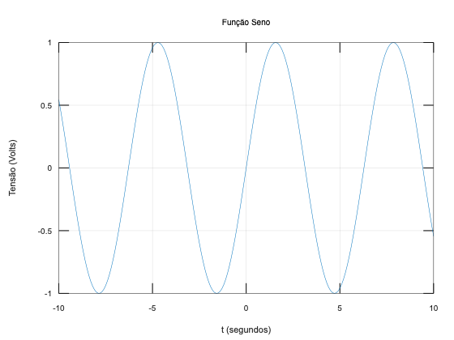
Exemplo 2: Gráfico de uma Onda
Suponha que se queira gerar o gráfico de uma onda senoidal de 5 Vpp, oscilando à 440 Hz, mostrando 1,5 ciclos do sinal.
Neste caso, temos que criar mais vetores e realizar alguns cálculos para gerar vetores (variáveis) contendo os dados para mostrar 1,5 ciclos deste sinal específico.
xxxxxxxxxxoctave:1> f=400;octave:2> amostras=100; # amostras por ciclooctave:3> T=1/f # periodo da ondaT = 2.5000e-03octave:4> t_inc=T/amostras # intervalo temporal entre amostrast_inc = 2.5000e-05octave:5> t = 0:t_inc:(1.5*T-t_inc); # cria vetor tempooctave:6> size(t) # mostra tamanho do vetor criadoans = 1 150octave:7> y = 5*sin(2*pi*f*t); # cria vetor y = f(t)octave:8> plot(t,y) # gera o gráficooctave:9> title('Senoide 440Hz')octave:10> xlabel('t (segundos)')octave:11> ylabel('Amplitude (Volts)')octave:12> gridResultado gráfico:
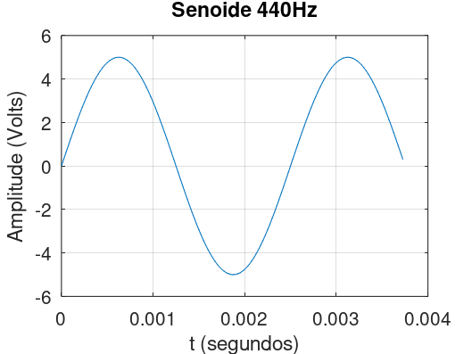
Exemplo 3: Gráfico de uma senóide amortecida
Suponha que resposta de um sistema sub-amortecido siga a equação:
Os 5 primeiros segundos do gráfico desta função fica:
xxxxxxxxxxoctave:13> clear all # limpa do "workspace" todas as variáveis já existentesoctave:14> OS=25; # percentual de overshoot (sobre-sinal)octave:15> t_s=5; # tempo de assentamentooctave:16> zeta = -ln(OS/100)/sqrt(pi^2+(ln(OS/100))^2) # calcula fator amortecimentoerror: 'ln' undefined near line 1, column 9octave:17> zeta = -log(OS/100)/sqrt(pi^2+(log(OS/100))^2) # calcula fator amortecimentozeta = 0.4037octave:18> wn = 4/(zeta*t_s) # frequencia natural de oscilacao (em rad/s)wn = 1.9816octave:19> sigma = wn*zeta # parte real das raizes complexassigma = 0.8000octave:20> wd = wn*sqrt(1-zeta^2) # parte imaginaria das raizes complexaswd = 1.8129octave:21> t=0:5/100:5; # cria vetor tempo, 100 amostras no totaloctave:22> y = 1 - exp(-zeta*wn*t)*(cos(wn*sqrt(1-zeta^2)*t) + (zeta/(1-zeta^2))*sin(wn*sqrt(1-zeta^2)*t)) # calcula resposta temporalerror: operator *: nonconformant arguments (op1 is 1x101, op2 is 1x101)>> # Observação: O Ocatve tal qual o Matlab considera todas as variáveis como matrizes (mesmo que seja 1x1)>> # Mas neste caso, a primeira parte da expressão antes do cos(.) já gera um vetor (1 x 101)>> # e a segunda parte da expressão, resultado do cos(.) gera outro vetor (1 x 101)>> # Note que para o Octave você tentou multiplicar 2 matrizes do tipo (1x101) * (1x101)>> # Nota que as dimensões internas desta multiplicação são incompatíveis (não há como realizar esta multiplicação)>> # O que se deseja é uma multiplicação de elementos "ponto por ponto", obtidas via operador ".*":octave:23> y = 1 - exp(-zeta*wn*t).*(cos(wn*sqrt(1-zeta^2)*t) + (zeta/(1-zeta^2))*sin(wn*sqrt(1-zeta^2)*t)); # calcula resposta temporaloctave:24> size(y)ans = 1 101octave:25> octave:26> plot(t,y)octave:30> title('Senoide Amortecida')octave:31> xlabel('tempo (segundos)')octave:32> ylabel('Amplitude (Volts)')Saída gráfica gerada:
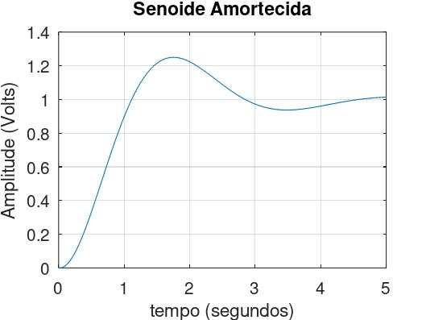
Note que as seguintes equações foram usadas:
Exemplo 4: Multiplicação de matrizes vs elemento-à-elemento
Note que no Ocatve qualquer variável é uma matriz, mesmo que seja de dimensões 1 x 1. Isto implica cuidado ao multiplicar variáveis que são vetores/matrizes.
Por exemplo:
xxxxxxxxxxoctave:1> e=34;octave:2> size(e)ans = 1 1octave:3> complexo=1+1*i % ingressando número complexocomplexo = 1 + 1ioctave:4> size(complexo)ans = 1 1octave:4>octave:4> a=[1 2 3 4]; % ingressando vetor aoctave:5> b=[0 2 4 16]; % ingressando vetor boctave:6> size(a) % Note: a = matriz 1 linha x 4 colunasans = 1 4octave:7> size(b)ans = 1 4octave:8> a*berror: operator *: nonconformant arguments (op1 is 1x4, op2 is 1x4)octave:9> c=a.*b % Note o "." antes de *c =
0 4 12 64
octave:10>Note: na linha de comando 9, o Octave entendeu que você tentou realizar:
xxxxxxxxxxa_1 x 4 * b_1 x 4 = 😮 (Erro)| |+- ≠ -+
Percebe-se que as dimensões internas das matrizes envolvidas não coincidem e então o erro.
Quando for necessário realizar operações elemento-à-elemento entre vetores, preceder o operador (* ou /) com o caracter . como mostrado na linha de comando 9 acima.
Ou você poderia tentar realizar:
xxxxxxxxxxoctave:14> f=a*b'f = 80octave:15>Note que acrescentar o caracter sufixo ' a uma variável que é uma matriz, significa realizar a transposta da mesma. Neste caso:
xxxxxxxxxxa_1 x 4 * b'_4 x 1 = f_1 x 1 🫡(Ok)| | | || +-- = -+ || |+--------------+ (dimensões de saída: linha x colunas)
Exemplo 5: Ingressando funções transferência
Segue exemplo de ingresso de uma "transfer function" (função transferência):
objeto tf, exemplo de uso:
xxxxxxxxxx>> s = tf('s');>> G = 1/(s+1)>> z = tf('z', tsam);>> z = tf('z', 0.2);>> Gd = 0.095/(z-0.9)>> sys = tf (num,den);>> G = tf([1, 5, 7], [1, 8, 6])>> sys = tf (num,den,tsam);Exemplo
xxxxxxxxxx>> num=poly([0, -2])num = 1 2 0
>> den=poly([-1, -4, -8]);>> G=tf(num,den)Transfer function 'G' from input 'u1' to output ...
s^2 + 2 s y1: ------------------------ s^3 + 13 s^2 + 44 s + 32
Continuous-time model.>> zpk(G)Transfer function 'ans' from input 'u1' to output ...
s^2 + 2 s y1: ------------------------ s^3 + 13 s^2 + 44 s + 32
Continuous-time model.>> % conferindo detalhes da função transferência:>> pole(G)ans = -8 -4 -1
>> zero(G)ans = -2 0>> % de outra forma:>> [z,p,k]=tf2zp(G)z = [](0x1)p =
-10 -4 -1
k = 40>>Note: a função
tf2zp()(disponível no pacotesignal) permite obter um resultado simular ao que seria obtido usando a funçãozpk()do MATLAB
Exemplo 6: Expansão em Frações Parciais
Seja a seguinte função transferência:
Esta função foi gerada à partir da eq. diferencial:
A expansão em frações parciais de (1), rende:
xxxxxxxxxx>> num=[4 6];>> den=[2 10 16 8];>> [r,p,k]=residue(num,den)r =
-1 1 1
p =
-2 -2 -1
k = [](0x0)>>Resultado da expanção:
Lembrando da tabela de transformadas de Laplace:
Temos então que:
Exemplo 7: Projeto de um Controlador Proporcional
Seja uma planta como:
O projeto de um controlador Proporcional com sobressinal máximo de 10% poderia ser desenvolvido como:
xxxxxxxxxx>> % Nâo esquecer de carregar certos pacotes:>> pkg load control>> pkg load symbolic>> >> G=tf(40,poly([-1 -4 -10])) % ingressando a planta
Transfer function 'G' from input 'u1' to output ...
40 y1: ------------------------ s^3 + 15 s^2 + 54 s + 40
Continuous-time model.>> pole(G) % confirmando polos da plantaans =
-10 -4 -1
>> zero(G) % confirmando zeros da plantaans = [](0x1)>> dcgain(G) % confirmando ganho DC da plantaans = 1>> % Isto significa que um degrau de amplitude u(t)=1 na entrada da planta >> % faz saída convergir para y(∞)=1>> % confirmando aplicando degrau unitário na planta:>> step(G)O que deve ter gerado o seguinte gráfico:
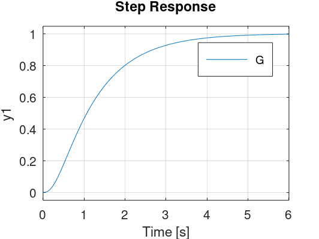
Temos que fechar a malha definindo um ganho para o controlador, evitando o sobressinal máximo desejado, então:
xxxxxxxxxx>> OS=10; % valor do sobressinal em porcentagem>> zeta=(-log(OS/100))/(sqrt(pi^2+(log(OS/100)^2)))zeta = 0.5912>> rlocus(G)>> hold on;>> sgrid(zeta,0)error: sgrid: W argument (1) must have positive values larger than 0error: called from sgrid at line 147 column 7>> % sgrid obriga 2 parâmetros de entrada no mínimo
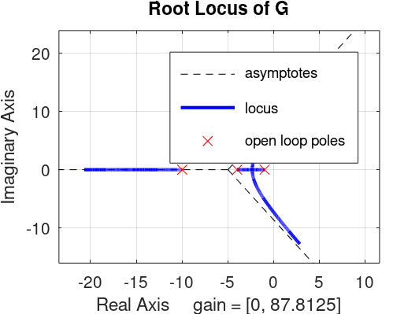
Mas podemos traçar uma reta axial que parte da origem do plano-s. Conhecendo-se o valor do
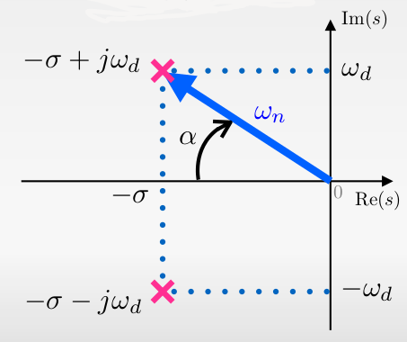
A figura anterior mostra polos de um sistema de 2a-ordem, do tipo:
com polos em:
então:
xxxxxxxxxx>> alpha=acos(zeta)alpha = 0.9383>> % convertendo para graus:>> alpha_deg=alpha*180/pialpha_deg = 53.761Podemos "automatizar" este cálculo e incluir os comandos para imprimir a reta correspondente a valores constantes de sgrid2(), cujo código aparece em seguinda:
xxxxxxxxxxfunction sgrid2 (zeta) % função para plotar linha guia do zeta na última janela gráfica ativa % a partir do valor de zetam calcula o angulo alpha e traça a reta % que corresponde a linha guia % Fernando Passold, em 29/12/2022 alpha=acos(zeta); % angulo correspondente ao zeta % fig=gcf(); % descobre numero da última janela ativa atual - dá no mesmo que fazer: fig = get (0, "currentfigure"); % recupera número da última figura ativa % Capturando limite da figura atual xlim=get(gca(),"xlim"); ylim=get(gca(),"ylim"); min_x=min(xlim); x=[0 min_x]; % vetor pontos da reta y2=abs(min_x)*tan(alpha); y=[0 y2]; hold on; plot(x,y,"color","cyan"); % ,"linestyle","--"); % sobre propriedades de plot ver: % https://docs.octave.org/v6.3.0/Line-Properties.html y=[0 -y2]; plot(x,y,"color","cyan"); shg % show the graph window % Note: shg is equivalent to figure (gcf) assuming that a current figure exists.endO resultado da aplicação da mesma na figura anterior gera:
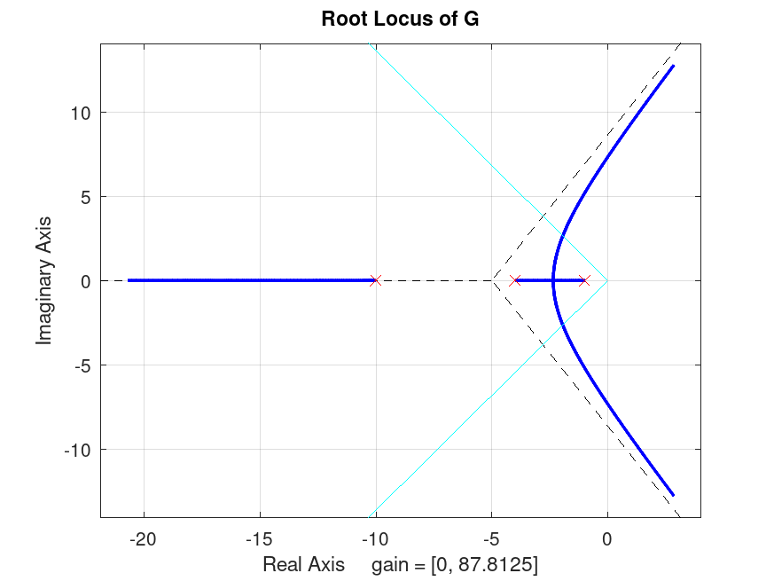
Podemos usar o comando >> legend off para sumir com o quadro que aparece junto a figura.
rlocus() ou rlocusx()
O Ocatve não possui uma função chamada rlocfind() como no caso do MATLAB, mas possui uma função similar: rlocusx().
No caso deste exemplo, resultaria em algo como:
xxxxxxxxxx>> figure; rlocusx(G)O que acaba gerando uma figura como a mostrada à seguir:
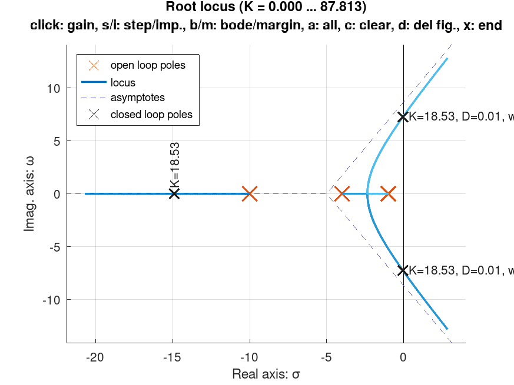
Mas note no exemplo anterior, que não foi possível imprimir uma linha guia para valores constantes de
Note que rlocuxx() entretanto traz outras opções. Uma vez ingressado este comando, a janela gráfica entra em modo interativo aceitando os seguintes comandos (https://octave.sourceforge.io/control/function/rlocusx.html ou https://gnu-octave.github.io/pkg-control/rlocusx.html):
| Tecla | Resultado |
|---|---|
| clique-esquerdo | mostra valor do ganho, polos de MF, |
| s | "step" = Resposta ao degrau unitário para ganho no ponto escolhido |
| b | "bode" = Diagrama de Bode |
| m | "margin" = Diagrama de Bode com margens de estabilidade (ganho e fase) |
| a | "all" = Plota os 4 gŕaficos anteriores |
| c | "clear" = limpa todas as anotações já feitas |
| d | "delete" = apaga todas as figuras abertas |
| x | "eXit" = sair do modo interativo |
Por exemplo, apontando mais de uma posição no RL, podemos obter uma figura como:
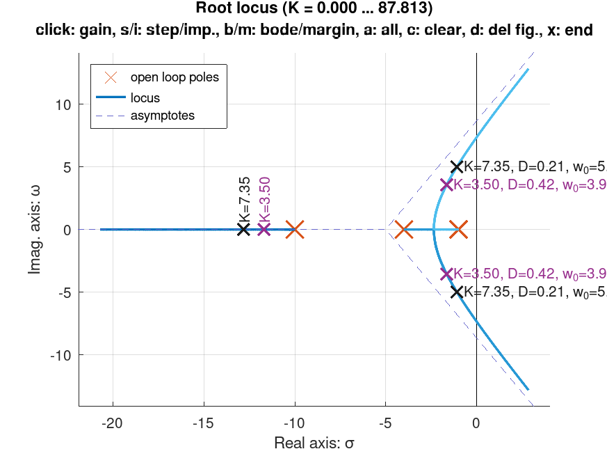
O diagrama de bode com as margens de ganho e de fase são mostradas na próxima figura:
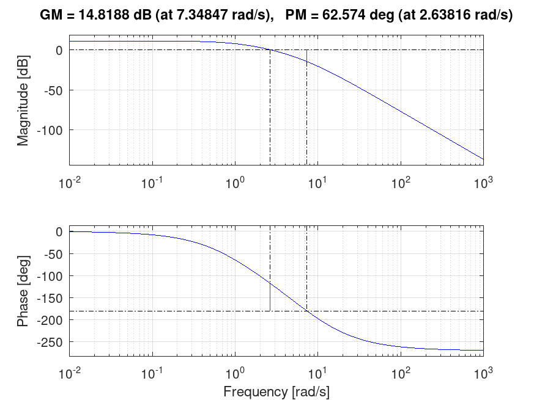
E a resposta à entrada degrau unitário para o ponto escolhido (
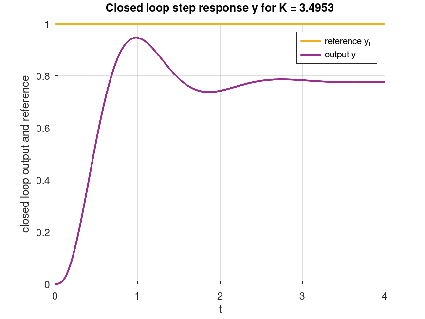
E clicamos "x" para sair do modo interativo e voltar para a janela de comandos do Octave.
A única limitação é que no RL mostrado, não aparece nenhuma linha guia referente a valores constantes de rlocusx() com sgrid2()...
Mas podemos tentar descobrir o ponto no RL com
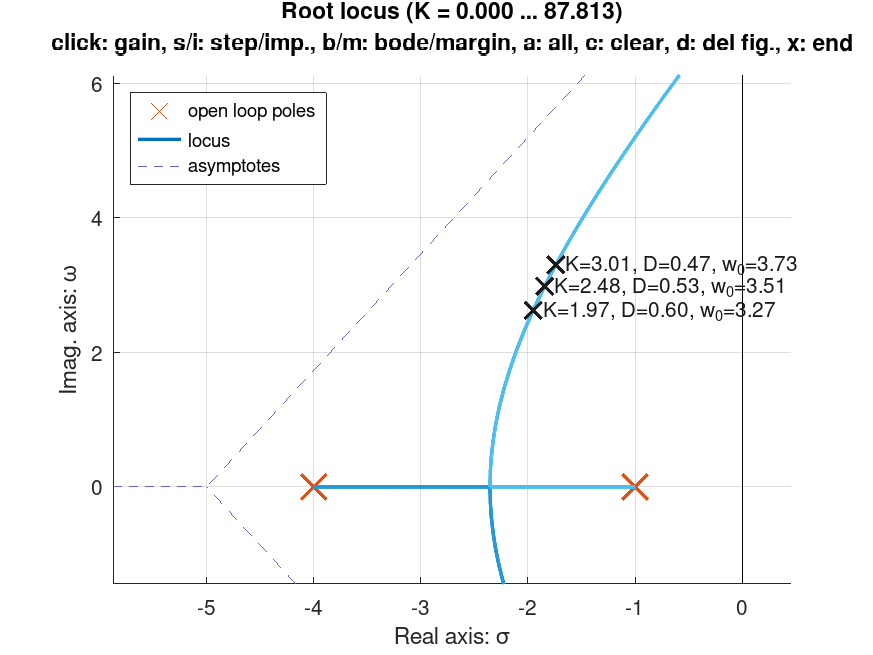
Encontramos um ganho aproximado de
Fechando a malha com
xxxxxxxxxx>> ftma=K*G
Transfer function 'ftma' from input 'u1' to output ...
78 y1: ------------------------ s^3 + 15 s^2 + 54 s + 40
>> H=tf(1,1)
Transfer function 'H' from input 'u1' to output ...
y1: 1
Static gain.>> ftmf=feedback(ftma, H, -1)
Transfer function 'ftmf' from input 'u1' to output ...
78 y1: ------------------------- s^3 + 15 s^2 + 54 s + 118
Continuous-time model.>> % gráfico da resposta ao degrau:>> figure; step(ftmf)>>E a seguinte figura é gerada:
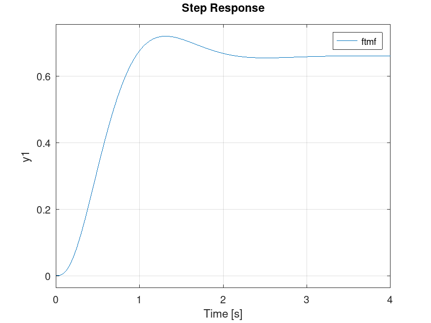
Percebemos um grande erro de regime permanente,
xxxxxxxxxx>> dcgain(ftmf)ans = 0.6610>> erro=(1-dcgain(ftmf))/1*100erro = 33.898>>Por curiosidade, usando este controlador e limitando o erro à 10%, teríamos que usar outro valor de ganho:
Lembrando da Teoria do Erro:
onde
Neste caso,
Calculando a constante
Então
xxxxxxxxxx>> ftma2=9*G
Transfer function 'ftma2' from input 'u1' to output ...
360 y1: ------------------------ s^3 + 15 s^2 + 54 s + 40
Continuous-time model.
>> % Conferindo detalhes da FTMA2(s):>> [z,p,k]=tf2zp(ftma2)z = [](0x1)p =
-10 -4 -1
k = 360>>>> ftmf2=feedback(ftma2, H, -1);>> figure; step(ftmf2)>>E obtemos a resposta:
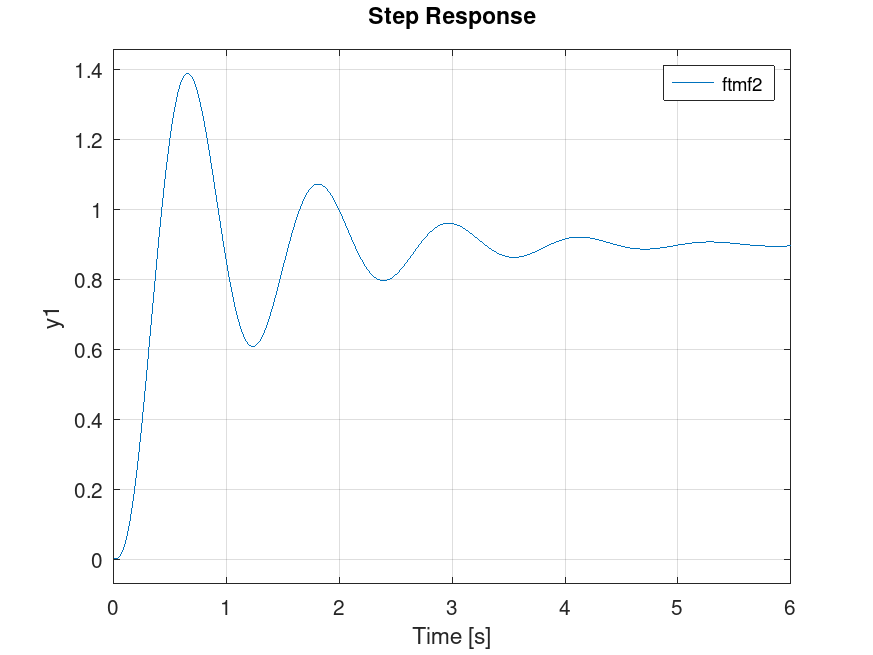
Faltaria obter informações sobre as características de resposta do sitema (função stepinfo() no MATLAB).
Outras funções do Octave
Da álgebra de Diagrama em Blocos:
- Blocos em série:
>> G = series(G1, G2) - Blocos em paralelo:
>> G = parallel(G1, G2) - Realimentação:
>> G = feedback(G1, G2, -1) - Resíduos de uma função transferência:
>> [r,p,k]=residue (num,den)
Fim.
Fernando Passold 16/03/2024; atualizado em 02/08/2026.